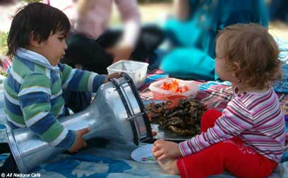

transforming CHECKPOINTS into MEETING-POINTS
| home |
| about |
| story |
| team |
| schedule |
| links |
| CURRENT WORK |
|
True to its spirit, the All Nations Café is focusing on bridging walls and creating closeness between Palestinians and Israelis and on inspiring a new generation of leaders and social innovators.
As in its beginning, when the café was opened on the border of East and West Jerusalem, so it is today on the border of Palestine and Israel. In a fertile land that used to be No Man's Land, and has become a military zone between the last houses of Palestinian villagers and the first houses of Israeli Jerusalemites. This way we have the great opportunity to bring people of both sides of the border, in an atmosphere of intimacy without intimidation, to come together and share their feelings, dreams and talents.
Since December 2003, the All Nations Café has been a fertile ground for innovative projects which allow people from warring nations to meet each other even at the worst of times. Opening a coffee shop in East Jerusalem opposite al-Aqsa mosque at the height of the al-Aqsa Intifada, touring Jordan and being the first group including Israeli-Jews to perform at one of the biggest Arab Music & Arts Festivals in Jerash, Organizing a one-week Palestinian-Israeli Families Camp during the recent war in Lebanon and in Gaza - are just a few examples.
Our gatherings by the Ein Haniya spring have been gradually growing since 2006 into regular get-togethers, where intimate listening, spiritual openness and family-like celebration draw people of all nations to come together every week and bring their feelings, ideas and longings. Palestinians come from towns, villages and refugee camps in the West Bank, Israelis come from Jerusalem area, the Galilee and even from settlements, and internationals come from Europe and the Americas.
We are always open to give space to your heart's passion and mind's creativity. You are welcome to contact us and see how we can support your project and how you can get involved in ours.
CONTACT INFORAMTION:
email allnationscafe@yahoo.com
phone +972-54-6707106

| RUNNING PROJECTS GATHERINGS on the ISR/PAL BORDER SPRINGS and TERRACES Working together on the land, farmers and volunteers of all nations. Restoring terraces and springs, collecting garbage, digging water catchment cellars and so on. Read more.. HOLY LAND CARAVANS PLANTING a FUTURE |